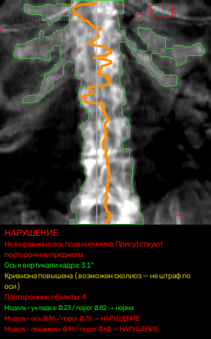

Как устроен сервис, полные таблицы метрик, стенд устойчивости к искажениям и команды, которыми всё воспроизводится.
Вход — DICOM-файлы денситометрии GE Lunar Prodigy (прямые проекции поясничного отдела позвоночника и проксимального отдела бедра). Выход — CSV из девяти колонок в заданном порядке: область, признак нарушения, тип нарушения из закрытого перечня, вероятность и время обработки. Проверяются пять критериев ТЗ: укладка и ось позвоночника, посторонние предметы, поворот бедра и область интереса бедра. Медицинского заключения сервис не формирует.
Один контур измеряет геометрию, второй смотрит на снимок целиком. Решение по критерию — их согласование, порог зафиксирован на out-of-fold.
Папка, zip или файл. Сбой одного снимка не останавливает партию.
Позвоночник или бедро — по размеру кадра и тегам, для нестандартных — по содержимому.
A — измерения, B — эмбеддинги EfficientNet-B0. Обучены отдельно на каждый критерий.
Скор — среднее рангов двух контуров. Порог взят на OOF, не на обучении.
CSV по ТЗ, XLSX по исследованиям, технический CSV, PNG и карточка решения.
Сегментация кости, измерение наклона оси, смещения от центра кадра, ширины костной области, угла диафиза бедра, расстояния до бокового края, площади плотных включений. Логистическая регрессия на 1–5 признаках.
EfficientNet-B0 даёт вектор 1280 признаков, затем стандартизация, PCA до 32 компонент и логистическая регрессия с сильной регуляризацией. Для укладки позвоночника используется дообученный на наших данных бэкбон.
score = 0.5·rank(геометрия) + 0.5·rank(эмбеддинги). Пороги для каждого критерия зафиксированы по out-of-fold предсказаниям с группировкой по исследованию; для редкого критерия укладки позвоночника порог взят по доле позитивов, чтобы не подстраиваться под шум.
Все оценки — out-of-fold с группировкой по исследованию: модель никогда не видела снимки того исследования, на котором проверяется. Рядом с каждым критерием — положение AUC стека на шкале 0.5–1.0 и интервал F1 по исследованиям. Слабые места показываем, а не скрываем.
| Критерий | Область | n / позит. | AUC геом. | AUC эмб. | AUC стек | AUC на шкале 0.5–1.0 | F1 OOF [95 % ДИ] | Надёжность |
|---|---|---|---|---|---|---|---|---|
Укладка пациента sp_pos · порог по доле позитивов, порог 0.861 | позвоночник | 166 / 10 | 0.915 | 0.790 | 0.893 | 0.50 [0.12; 1.00] | мало позитивов (10): интервал широкий, читать по AUC; сильнее контур A (геометрия + признак головы укладки) | |
Ось позвоночника sp_axis · prevalence_x1.4, порог 0.777 | позвоночник | 166 / 17 | 0.839 | 0.797 | 0.889 | 0.60 [0.29; 0.82] | сильнее геометрия | |
Посторонние предметы sp_art · prevalence_x1.4, порог 0.602 | позвоночник | 166 / 35 | 0.560 | 0.897 | 0.823 | 0.53 [0.24; 0.74] | сильнее контур B (эмбеддинги) | |
Укладка пациента hip_pos · порог по доле позитивов, порог 0.658 | бедро, обе стороны | 329 / 79 | 0.710 | 0.635 | 0.725 | 0.43 [0.22; 0.60] | сильнее геометрия | |
Область интереса hip_roi · порог по доле позитивов, порог 0.918 | бедро, обе стороны | 329 / 16 | 0.902 | 0.877 | 0.917 | 0.51 [0.00; 0.91] | сильнее геометрия |
ROC-AUC стека по пяти критериям — от 0.725 до 0.917. У критериев с малым числом положительных исследований (sp_pos — 6, hip_roi — 6) интервалы широки: оценка описывает несколько конкретных исследований, а не устойчивую способность распознавать дефект (паспорт выборки — docs/sample_passport.json). Слабые места показываем, а не скрываем. Источник: models/metrics_summary.json (OOF, группировка по исследованию), ДИ по F1 — бутстрап по исследованиям.
| Область | ROC-AUC [95 % ДИ] | F1 [95 % ДИ] | Macro-F1 по типам нарушений [95 % ДИ] |
|---|---|---|---|
| Поясничный отдел позвоночника | 0.813 [0.69; 0.91] | 0.662 [0.49; 0.80] | 0.547 [0.40; 0.70] |
| Проксимальный отдел бедра | 0.760 [0.63; 0.86] | 0.516 [0.31; 0.68] | 0.473 [0.20; 0.68] |
Источник: docs/METRICS_REPORT.md, таблица «Итого» (python src/eval_oof_metrics.py, 95 % ДИ — бутстрап по исследованиям, 2000 повторов).
Те же кадры и разбиение, что у метрик выше. ROC-AUC «всегда норма», «всегда нарушение» и случайного классификатора равен 0.5; F1 «всегда нарушение» — нижняя планка F1 при доле позитивов p, равная 2p/(1+p). Контуры A и B и простая логрегрессия на всех геометрических признаках без отбора (GroupKFold(5) по исследованию) оценены при том же правиле порога на собственных OOF-скорах. Интервалы ROC-AUC — бутстрап по исследованиям, 500 ресэмплов.
| Критерий | n / позит. | F1 «всегда нарушение» | AUC контур A | AUC контур B | AUC все признаки без отбора | AUC стек [95 % ДИ] | F1 стек |
|---|---|---|---|---|---|---|---|
Укладка пациента sp_pos · позвоночник | 166 / 10 | 0.11 | 0.915 | 0.790 | 0.837 | 0.893 [0.70; 1.00] | 0.50 |
Ось позвоночника sp_axis · позвоночник | 166 / 17 | 0.19 | 0.839 | 0.797 | 0.510 | 0.889 [0.75; 0.98] | 0.60 |
Посторонние предметы sp_art · позвоночник | 166 / 35 | 0.35 | 0.560 | 0.897 | 0.482 | 0.823 [0.70; 0.92] | 0.53 |
Укладка пациента hip_pos · бедро | 329 / 79 | 0.39 | 0.710 | 0.635 | 0.512 | 0.725 [0.62; 0.82] | 0.43 |
Область интереса hip_roi · бедро | 329 / 16 | 0.09 | 0.902 | 0.877 | 0.373 | 0.917 [0.71; 1.00] | 0.51 |
Стек не везде выше сильнейшего контура по AUC (sp_pos, sp_art): его вес 0.5/0.5 зафиксирован заранее ради устойчивости, а не подобран под эту выборку. У sp_pos контур A при пороге по доле позитивов помечает 10 клонов одного отрицательного исследования и даёт F1 = 0 при AUC 0.915. Логрегрессия на всех признаках без отбора теряет сигнал сильных одиночных признаков при 10–35 позитивах. Таблица описывает различия внутри одной выборки и не доказывает перенос на другие аппараты и разметчиков. Источник: docs/BASELINES.md, docs/baselines.json.
quality_prob — грубая вероятность, не точная: на OOF ошибка калибровки ECE 0.14 (позвоночник)
и 0.15 (бедро), Brier 0.199 / 0.198 против 0.231 / 0.201 у константы. Значение выше 0.5 означает «сервис поставил класс 1»:
при 0.5–0.8 нарушение подтверждается у 29 % кадров позвоночника, при 0.8 и выше — у 80 %; для бедра при 0.5–0.9 — у 36 %,
при 0.9 и выше — у 96 %. Внутри класса это ранг для сортировки очереди, а не процент. Скоры критериев — ранги по
построению; калиброванная величина p_cal (debug-CSV, API) читается как вероятность только для посторонних
предметов и укладки бедра, где положительных исследований 17 и 24. Разбор с диаграммами надёжности и интервалами —
docs/CALIBRATION.md. Зона «не уверен» (needs_review) сейчас помечает 14.5 % строк позвоночника и 9.4 % строк бедра; в неё попадают
в основном строки с уже отмеченным нарушением, пропусков в ней мало (2 из 15 и 6 из 44 на OOF). Расширение полосы
вокруг порогов не поднимает полноту среди уверенных строк за пределами шума, а лишь переводит строки в зону почти
линейно; разбор по ширине полосы — docs/UNCERTAIN_ZONE.md.
В обучающей выборке нарушение укладки позвоночника встретилось в 6 исследованиях из 99 (10 кадров из 166; половину дают 2 исследования). Метка задана на исследование, поэтому единица счёта — исследование: 166 кадров позвоночника несут информацию 99 исследований, 329 кадров бедра — 78. Интервалы считаются по исследованиям и для редких критериев широки: F1 укладки позвоночника 0.50 [0.12; 1.00], области интереса бедра 0.51 [0.00; 0.91]. Признак головы укладки (2.4.0) проверен nested только на этих же 6 исследованиях, поэтому на закрытом тесте по укладке позвоночника следует ожидать результат заметно слабее OOF-цифр. Источник: docs/sample_passport.json.
Все 499 снимков получены на одном GE Lunar Prodigy и размечены одним экспертом. Перенос на другие денситометры не проверен. Часть меток опирается на признаки, которые наши измерения ловят частично: например, у эксперта ось позвоночника оценивается шире, чем глобальный наклон.
Метрики технического задания считаются организаторами на закрытом тесте. Наши OOF-оценки — честный ориентир без утечек, но не гарантия. Поэтому вместе с сервисом мы отдаём воспроизводимый протокол обучения, тесты и код подсчёта метрик.
Измеренные заранее кривые, а не живые ползунки: каждый вид искажения прогнан на выборке размеченных снимков, показана доля снимков, у которых изменился класс качества.
Выборка: 81 снимков разметки (27 позвоночник, 54 бедро), из них с нарушениями 40. Каждый снимок пересохранён с одним искажением и прогнан повторно; показана доля снимков, у которых изменился класс качества. Ошибок обработки (Failure) ни в одном варианте не было (максимум 0.0 %), область снимка не менялась ни разу (максимум 0.0 %). Время на снимок в исходном прогоне: медиана 0.05 с, 95-й перцентиль 0.09 с (стенд 2 vCPU; паспорт производительности с условиями — docs/PERFORMANCE.md).
На реальном потоке одного аппарата GE Lunar с фиксированным экспортом искажений яркости, шума и масштаба нет: все снимки приходят в одном формате. Изменения формата и тегов на потоке возможны, и к ним система устойчива полностью. Перевороты при изменении экспозиции сосредоточены у порога решения (медианный запас 0,09–0,11), то есть касаются спорных снимков.
Источник: docs/qa/robustness_results.json (2026-09-20), docs/ROBUSTNESS_REPORT.md; скрипт tests/robustness_suite.py.
Техническая группа может развернуть сервис на своих данных без нашего участия. Сервис не делает ни одного внешнего вызова: кабинет, API и модели лежат внутри образа, и самопроверка из 18 пунктов прогоняется в контейнере с полностью отключённой сетью (--network none).
# сборка образа и самопроверка ./build_and_run.sh build # пакетная обработка папки с DICOM или zip -> outputs/results.csv (+ .xlsx) ./build_and_run.sh run /path/to/dicom_folder ./outputs # HTTP API на порту 8000, Swagger: http://localhost:8000/docs ./build_and_run.sh api 8000 /path/to/dicom_folder ./outputs # тесты формата и изоляции запросов ./build_and_run.sh test
Снимки можно не загружать вручную: контейнер принимает их с денситометра или из PACS по DICOM C-STORE (AE Title DENSITOAI, порт 11112; CR, DX, Secondary Capture; несжатые transfer syntax и RLE). Принятое исследование уходит в тот же /api/analyze, что и кабинет, результат появляется в outputs/jobs/<job_id>/, принятые файлы остаются в outputs/inbox/. Запуск: docker compose up -d densito-api densito-receiver; проверка: python -m pynetdicom storescu <ip> 11112 tests/phantoms/study_01 -r -aec DENSITOAI. Без TLS — только внутренняя сеть отделения. Подробнее — docs/DICOM_RECEIVER.md.
pip install -r requirements.txt python src/inference.py --input /path/to/dicom --output outputs/results.csv --xlsx python tests/test_inference_format.py # формат, битые входы, детерминизм python tests/test_api_isolation.py # изоляция файлов между запросами python src/eval_oof_metrics.py # метрики с ДИ -> docs/metrics_oof_full.md
git clone https://neuropeople.pro/git/densitoai.gitпубличный репозиторий/docsSwagger UI работающего API: открытьREADME.mdназначение, запуск, API, формат данных, ограниченияtools/department_summary.pyсводка по партии для отделения: доли нарушений по области, типу, аппарату и дате с ДИ Уилсона 95 %, без персональных данных; в кабинете — блок «Сводка по партии», в API — /api/results/{job}/summarydocs/VERIFICATION.md
самопроверка образа из 18 пунктов, в том числе стресс-набор: 24 битых и нестандартных файла из фантомов в одном пакете с нормой — битые дают строку Failure, норма совпадает с одиночным прогоном бит в битdocs/MEASUREMENT_CHECK.mdакт поверки измерительного контура на фантомах: 13 фантомов повёрнуты на −15…+15° и сдвинуты на −30…+30 мм, измеренное сравнено с заданным без разметки — в диапазоне до 8° и 20 мм угол оси позвоночника MAE 0.35°, угол диафиза бедра MAE 0.04°, смещение центра MAE 0.09 мм, сторона бедра 245/245; поверка на фантомах, не замена клинической валидацииdocs/METRICS_REPORT.mdметрики по ТЗ §8.4 с 95 % ДИdocs/PERFORMANCE.mdпаспорт производительности: секунды на снимок и память с условиями замера; боевой сервер в тихих условиях — медиана 0,54 с (499 файлов за 368 с одним процессом), под чужой нагрузкой — 1,84 с, локально 2 vCPU — 0,07 с; как воспроизвести, что числа не означаютdocs/UNCERTAIN_ZONE.mdзона «не уверен»: кривая «покрытие → полнота» по ширине полосы на OOF, ДИ по исследованиям, проекция на боевой прогон; правило не меняетсяdocs/ROBUSTNESS_REPORT.mdустойчивость к нестандартному входуdocs/PREPROC_GATE_REPORT.mdинвариантная предобработка и выбор варианта внутри nesteddocs/EVIDENCE.mdданные, лицензии, отвергнутые гипотезы, ограниченияdocs/qa/JURY_QA.mdвопросы жюри и ответы с указанием файлов-источников; ограничения, о которых говорим первымиmodels/MODEL_CONTRACT.mdформат моделей и пороговconfig.yamlвсе строки, пороги и веса в одном файлеPython 3.12, PyTorch CPU, scikit-learn, pydicom. Модели — файлы pkl с зафиксированным контрактом, бэкбон EfficientNet-B0 и этот самый кабинет лежат в образе — интерфейс открывается на корне того же порта, что и API. Ошибки отдельных файлов не роняют запрос: строка получает статус Failure и вероятность 0.5.

docs/PERFORMANCE.md; пропускная способность не обещается.